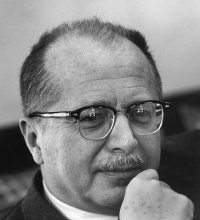

Please note: the AAS Obituaries are temporarily being hosted on this website while their full content is being ingested into the PubPub publishing platform newly adopted by the Bulletin of the American Astronomical Society. When the migration is complete, your existing links will take you to the final, migrated content. Contact peter.williams@aas.org with any questions.
Jesse Greenstein (1909-2002)
On the 21 October 2002, with the death of Jesse Greenstein, many of us in astronomy lost a beloved adopted father and astronomy lost one of its most influential leaders of the postwar era. Truly a giant is gone; it is easy to say that they don't make the likes of Greenstein, Spitzer, and Scharwarzschild any more, but it is unfortunately only the truth. The field has changed and grown enormously in the more than 50 years spanned by Jesse's career with no small part of this traceable directly to his efforts.
His growth was shaped very much by world events. He enjoyed a quite comfortable childhood; he was born on 15 October 1909 to successful immigrant parents, Maurice and Leah, who indulged his early interests in astronomy, radio, and science in general; these interests were to remain with him the rest of his life. As a boy he thought physics dull and chemistry exciting, though later he was to be influential in the transformation of astronomy into astrophysics in this country. He was something of a prodigy, entering the Horace Mann School for boys (an excellent private high school) at age 11 and Harvard at age 16 (in 1926). He met and became close friends with Cecilia Payne, with whom he shared cultural and scientific passions. She was certainly the greatest female astronomer of the era but largely shunned and ignored by her colleagues. Thus began a curious ambivalence in his relationship with women in the field; in fact and in action he was highly supportive but much less so in word. He graduated with a BA in astronomy in October 1929, on the eve of the stock market crash. He stayed for one more year and obtained a Master's degree, prevented by ill health from a planned one-year visit to Oxford.
His family had always assumed that he would forego his interest in research and take his place in the family's successful business and real estate endeavors and the seriousness of the market collapse impelled him, very much against his will, to do just that. He proved himself to be a capable manager, able to deal with difficult times and circumstances, and the family business prospered. However, his itch to be an astronomer did not falter, and in 1934, when he was convinced that the family business would survive without him, he returned to Harvard - over the objection of director Harlow Shapely who tried to persuade him that the field had advanced too far in his four-year absence for him ever to catch up!
This same year he married his childhood sweetheart Naomi Kitay, whom he ever after affectionately called 'Kitty.' Naomi nourished the already-strong humanist streak in Jesse. Interested in, and passionate about, art and the theater, life in general, and whatever it was that absorbed her interest at the moment, she was a wonderful foil for Jesse's self-deprecatory and sometimes depressive moods. She died a few months before Jesse did; they had been married 66 years.
At Harvard he pursued a very successful and prescient thesis on the scattering of light by interstellar grains, begun perhaps partly in an endeavor to alleviate his failure during a Master's research project to recognize the existence of dust absorption and reddening in the face of quite convincing data. His last days at Harvard were premonitory of things to come in his career. He and Fred Whipple wrote a paper attempting, quite unsuccessfully, to explain Karl Jansky's detection of strong radio emission from the center of the Galaxy as thermal emission; this was long before the existence of magnetic fields and relativistic electrons were even suspected. The problem was to wait 15 years for a solution. But Jansky's, and later Grote Reber's, observations resonated with Jesse's early interest in radio and presaged his later decisive support for radio astronomy in the U.S.
In 1937 he was awarded a NRC fellowship, which he took to Yerkes Observatory. Attracted by the innovative and productive group assembled there by Otto Struve, he flourished. Still working on dust and the interstellar medium, he began a long and productive collaboration with theorist Louis Henyey. He also began his career in stellar spectroscopy at Struve's urging and did the first analysis of the peculiar hydrogen-poor object upsilon Sagittarii, thus beginning a love affair with peculiar stars and their compositions which was to last the rest of his career.
During the war he and Henyey, as well as a number of other astronomers, managed to stay at Yerkes, largely putting aside astronomical research to work on the war effort. He and Henyey learned optics in the face of great difficulty (modern optical design techniques at the time being almost exclusively both proprietary and German) and produced many optical designs for the military, among which is the beautiful wide-angle, Henyey-Greenstein camera.
After the war Jesse became very interested in, and supportive of, the vast changes to the field wrought by the technological developments during the war, including infrared detectors, photomultipliers, sensitive radio receivers, and rockets. Astronomy clearly stood on the threshold of a new and wonderful era, which he was determined to help usher in.
The astronomical community had already recognized Jesse's genius and in 1948 he received an invitation he could not possibly refuse. He was invited to come to Caltech to build a department to do science with the soon to be completed 200-inch Hale telescope, by far the largest and most ambitious telescope project to that date. The family (there were now two sons, George and Peter) moved from the little town of Williams Bay, Wisconsin to the bustle of postwar Pasadena, California. One may well ask whether anyone, given an opportunity of this magnitude, could have failed to be great but the answer, I am certain, is that it would have been very easy indeed. It took all of Jesse's hard-won ability as a manager, his wonderful personal touch, his ease with moneyed supporters, and above all his unimpeachable scientific and personal integrity to build what is universally recognized as one of the finest departments in the world. The arcane political arrangements with the Carnegie Institution, which ran Mount Wilson and would later run both Mount Wilson and Palomar jointly with Caltech, were hammered out with Jesse's guidance before he had a chance to build the department. In the beginning the only two astronomers at Caltech were Jesse and Fritz Zwicky; Zwicky was a genius but personally incredibly difficult and Jesse was very much alone in navigating the difficult political waters.
His view of the way to build the department, which time has certainly vindicated, was to hire the best international theorists he could find. He was convinced they were the smartest people being trained at that time and convinced as well that the lure of the great telescope would transform them into capable observers who would soon understand their data from an astrophysical perspective. This was wildly successful. He built a postdoctoral program around stellar abundance determinations, funded by the Air Force and aided by the many military contacts he had made during and after the war. He managed, in his tiny department, to lure the most able students in the field. The list of names among the early students and the ``graduates" of the abundance project is a who's who of astronomy: Allan Sandage, Helmut Abt, George Wallerstein, Halton Arp, Wallace Sargent, Leonard Searle, to name only a representative few.
His own research continued unabated; he returned to the subject of dust with Leverett Davis and, in 1951, they proposed the magnetic alignment mechanism to explain interstellar polarization that survives essentially unchanged to the present - certainly one of the longest-lived theoretical results in the field. At Caltech's Kellogg Radiation Laboratory, there was much interest in the nuclear reactions that provide stars their energy and potentially result in observable abundance changes. This work fit hand-in-glove with Jesse's interest in stars of peculiar abundance and he forged close scientific ties with the Kellogg team, particularly Willy Fowler. Jesse arranged a controversial visit to Caltech by Fred Hoyle (Hoyle's steady state cosmology was not popular among Caltech physicists) and Hoyle's protégés Geoff and Margaret Burbidge. Their classic work with Fowler on nucleosynthesis arose from this visit. Later his research turned increasingly toward understanding the denizens of the lower left of the Hertzsprung-Russell diagram - white dwarfs, blue subdwarfs, and nuclei of planetary nebulae. He became the observational authority on such stars, and much of our current understanding of these objects is a direct outgrowth of his work. In the course of this work he obtained several spectra of faint blue objects with weak, broad emission lines that were not readily identifiable. The realization that compact stars could have very strong magnetic fields was then current, and he felt that most of these objects could be explained by peculiar Zeeman and pressure effects on the spectra of intrinsically faint degenerate objects. The quasar story has been told many times, but the realization by Maarten Schmidt in 1963 that the spectrum of 3C273 was consistent with a redshift of 16 percent led them to reassess Jesse's work on 3C48, a quasi-stellar radio source with a spectrum similar to some of the peculiar blue "stars" in his library of spectra: this turned out to be the second QSO redshift recognized, with a value of 0.37. In 1960, Jesse had obtained a spectrum of Ton 202, which he had confidently identified as a peculiar DC white dwarf 40 pc distant. When he went through his library of spectra with an eye toward new possibilities, it turned out to be a QSO with a redshift of 0.37, continuing his penchant for being right almost all the time, but with the occasional really spectacular mistake.
He characterized his research and the rather frequent and profound changes of direction in a very characteristic way - he very actively wanted to skim the cream off new subjects and establish correct directions for research, but he did not care for pedantic detail. It is clear from his record that this did not mean that he was ill equipped to dig deeply; his work on dust in particular was very difficult stuff. He simply felt that he had the tools at his disposal to help at the very frontiers of astronomical research and preferred to leave the details to others.
Even before he came to Caltech in 1948, Jesse was convinced by the work of Jansky and Reber, and later the British and Australians, that radio astronomy was of vast importance to the field, and he was determined that Caltech should be a center. He fought for the founding of a radio astronomy group by first gaining institutional acceptance - which was not easy - and then obtaining federal funding for the Owens Valley Radio Observatory (OVRO) in 1954 from the Office of Naval Research. In this context, it is important to note that astronomy in the U.S. had been, for a very long time, almost exclusively privately funded and the Caltech abundance project and the radio astronomy observatory were among the first large departures from this norm. Jesse's task was made even more difficult by the connection with the Carnegie Institution, which at the time had specific rules against seeking federal funds.
He gradually built Caltech astronomy into the powerhouse it has been for many years. Along the way he fostered and welcomed promising new technology, beginning with photomultipliers, through radio astronomy techniques, vidicons, CCDs, and computers. His views on computers as tools for doing theory, namely that they basically trivialize theoretical research (he would not have said it ``exactly" that way) would certainly be very unpopular today.
Jesse's role on the national scene was profound and controversial. He was instrumental in persuading the Navy and Air Force to fund astronomical research and he was active in the founding of the National Science Foundation; he chaired the first NSF advisory committee in astronomy. He served on countless government advisory committees and worked with other Caltech physicists in highly classified research until well after such work became highly unpopular on campuses. He pushed very hard for the founding of the national observatories, particularly NRAO. He was one of the organizers of the conference in 1954, which was explicitly aimed at convincing the government to establish NRAO - the same year he obtained funds from the Navy to build Caltech's private OVRO, which was for a long time in direct competition with the national observatory. He was also influential in the founding of the national optical observatory at Kitt Peak, though this was to be a very contentious issue later. He was chosen in 1970 to lead the second National Academy decade review of astronomy, after the ground breaking Whitford report a decade earlier. It is generally conceded that the Greenstein report was the most successful of these efforts to date in the face of a rather austere funding climate; this effort was aided by the cohesive spirit of the community, but also because of the wisdom that he brought to the enterprise.
His view on the best way to conduct science was explicitly and very frankly intellectually elitist. The very best people at the very best institutions, he thought, should be supported to the fullest extent possible with money and technological support wherever it could be found. He had built the Caltech department from a gleam in George Ellery Hale's eye to one of the preeminent astronomical research institution in the world, and was proud of it. He felt that the nation owed it to science for its own sake and as a nation to support science fully. He wrote in his memoir, ``An Astronomical Life," in the "Annual Reviews of Astronomy and Astrophysics": ``Human illness and poverty cannot be cured merely by spending money, but the human condition can be ennobled by spending money wisely." He did not think that spending vast amounts of money at Kitt Peak to build giant telescopes for the whole community was the best way to spend said vast amounts of money. He felt that the elite universities had demonstrated the ability both to build big instruments (the 200-inch, the 120-inch) and to attract the astronomical staff to operate them and to do superb science with them. If the federal government were to spend the money, it should clearly go to those universities. In any event, these universities should not be allowed to wither as the national observatories grew. Curiously, his view of NRAO was very different and he personally was enthusiastic about the construction of the VLA; indeed, it was the highest-priority project of the Greenstein report.
In any document such as this, one must mention offices and awards. Jesse was awarded and held most of them: the Gold Medal of the RAS, the Russell Lectureship, the Bruce Medal, the Vice Presidency of the AAS, a (controversial) chairmanship of AURA, membership in the National Academy, chairmanship of many of its, and other government, advisory committees as well as chairmanship of the decadal review. He held the first Lee DuBridge chair at Caltech. While he was appreciative of these awards, he felt that awards and honors usually came too late in a scientist's career to be useful.
He was a superb scientist and skillful manager and administrator, but no description of Jesse, especially this memorial one, can possibly be complete without some attempt to describe him as a human being. It was shortly before the QSO era, in 1961, that I, as a green graduate student, first met Jesse. I was in awe, of course, but it soon became clear that there was not even a stern exterior to this remarkable man who had built the Caltech department, and who was very much a personification of American astronomy. He cared deeply about everyone in his department and clearly prided himself as an amateur psychologist. He was always available, charming, warm, and open, and eager to discuss and help with personal problems as well as scientific ones with seemingly equal willingness and enthusiasm. Naomi was called in for help with stubborn personal problems and their house on San Pasqual street was a warm, inviting place and the location of countless formal and raucous informal parties and gatherings. I never worked with him directly as a student, but felt that I knew him better than any of the faculty with whom I did work. All of the words I have read in tribute to Jesse mention him as a father; he was certainly mine, and I (and all of his many children) will miss him terribly.
Photo copyright California Institute of Technology
Obituary written by: Jim Gunn (Princeton University)
BAAS Citation: BAAS, 2003, 35, 1463
SAO/NASA ADS Bibcode: 2003BAAS...35.1463G